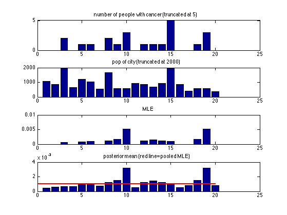
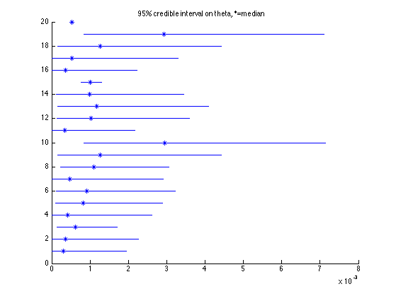

Empirical Bayes Missouri Cancer Example
Johnson and Albert p67, p24 See also cancerRatesMh
Contents
Setup Data
% This file is from pmtk3.googlecode.com data.y = [0 0 2 0 1 1 0 2 1 3 0 1 1 1 54 0 0 1 3 0]; data.n = [1083 855 3461 657 1208 1025 527 1668 583 582 917 857 ... 680 917 53637 874 395 581 588 383];
Fit Distribution using Tom Minka's fixed point method
X = [data.y(:) data.n(:)-data.y(:)]; alphas = polya_fit_simple(X); a = alphas(1); b = alphas(2);
Posterior means and CIs
display([a b]); d = length(data.n); % ncities; thetaMLE = zeros(d, 1); aPost = zeros(d, 1); bPost = zeros(d, 1); for i=1:d thetaMLE(i) = data.y(i)/data.n(i); aPost(i) = a + data.y(i); bPost(i) = b + data.n(i) - data.y(i); post.meantheta(i) = aPost(i)/(aPost(i) + bPost(i)); post.CItheta(i,:) = betainvPMTK([0.025 0.975], aPost(i), bPost(i)); post.mediantheta(i) = betainvPMTK(0.5, aPost(i), bPost(i)); end thetaPooledMLE = sum(data.y)/sum(data.n)
ans =
0.8269 607.4871
thetaPooledMLE =
9.9331e-04
Plot
figure; subplot(4,1,1); bar(data.y); title('number of people with cancer (truncated at 5)') set(gca,'ylim',[0 5]) subplot(4,1,2); bar(data.n); title('pop of city (truncated at 2000)'); set(gca,'ylim',[0 2000]) subplot(4,1,3); bar(thetaMLE);title('MLE'); subplot(4,1,4); bar(post.meantheta);title('posterior mean (red line=pooled MLE)') hold on;h=line([0 20], [thetaPooledMLE thetaPooledMLE]); set(h,'color','r','linewidth',2) printPmtkFigure('cancerRatesEb');
95% credible interval
figure; hold on; for i=1:d q = post.CItheta(i,1:2); h = line([q(1) q(2)], [i i]); median = post.mediantheta(i); h=plot(median,i,'*'); end title('95% credible interval on theta, *=median') printPmtkFigure('cancerRatesCredibleEb');